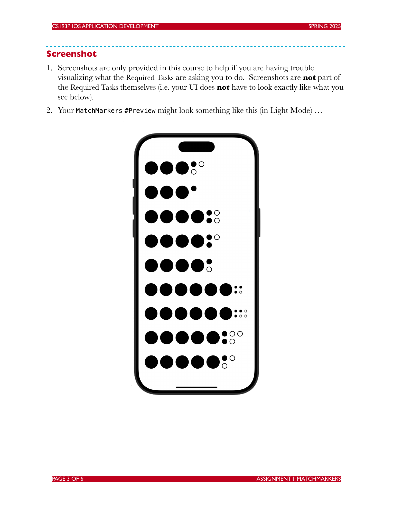

CS193P iOS Application Development
Spring 2025
作业 I：MatchMarkers
目标
本次作业的目标，是重新实现前两节课中演示的内容。
这主要是为了让你体验在 Xcode 中创建项目，并从零开始输入代码。不要从任何地方复制粘贴代码。请亲手输入，并在输入过程中观察 Xcode 的反应。
一定要阅读下面的 Hints 部分！
另外，请查看 Evaluation 部分，确保你理解这次作业会根据哪些方面进行评估。
截止时间
本作业需要在第 4 次课开始之前提交。
材料
- 你需要通过 Mac 上的 App Store 安装免费程序 Xcode。早于 Xcode 16 的版本无法使用。
- 为了重新实现 demo，你肯定需要观看前两节课。
必做任务
- 按照课堂演示，让 CodeBreaker 应用正常运行。输入所有代码。不要从任何地方复制粘贴。确保应用能在 Simulator 中成功运行。
- 增强
MatchMarkers的#Preview，让它在MatchMarkers旁边也显示一些“虚拟 peg”，这样 Preview Canvas 中的MatchMarkers会更像处在它的“原生环境”里。可以参考下面的截图来理解大致效果。 - 增强
MatchMarkers这个 View，让它在收到包含 3 到 6 个Match值的数组时都能正常工作。课堂上我们只传入过 4 个。 - 更新你上面构建的
MatchMarkers的#Preview，通过尝试多种不同的Array<Match>配置来测试你的代码，包括包含 3、4、5、6 个Match值的数组，并使用多种Match值，也就是.exact、.inexact、.nomatch。 - 为了正确预览当
Array<Match>中不是 4 个元素时MatchMarkers的样子，#Preview也需要显示 3、4、5 或 6 个“虚拟” peg。因为每个 peg 都可能对应一个Match，所以例如如果没有 5 个可匹配的 peg，就不会有 5 个 match marker。 - 确保你的
MatchMarkers的#Preview在深色模式和浅色模式下都有合理表现。
截图
- 本课程提供截图只是为了在你难以想象
Required Tasks要求你做什么时提供帮助。截图本身不是必做任务的一部分，也就是说你的 UI 不必和下面看到的完全一样。 - 你的
MatchMarkers #Preview在浅色模式下可能看起来类似这样。

提示
- 本周我们只是在原型化 UI 的组件，具体来说是
MatchMarkers。下周我们会实现真正的 CodeBreaker 游戏玩法。 - 对于必做任务 2，一种不太美观的方案是在
#Preview中添加很多重复代码。但你可以考虑创建自己的“俯瞰式 View”，也许叫MatchMarkersPreview之类的名字。这个 View 只给#Preview使用，用来把虚拟 peg 和MatchMarkers一起显示。这样你的#Preview就可以只包含对这个“俯瞰式 View”的使用，比如放在一个VStack里。换句话说，要“分解”你的#Preview。没有规则说你不能在#Preview中使用任何你想用的 View，包括那些专门为了让#Preview更好、更干净而创建的 View。 - 记住，你可以在
@ViewBuilder中使用if语句，例如在MatchMarkers的var body中。这是提示，不是必做任务。 - 必做任务 3 只需要几行代码就能完成。非常少的几行。
- 必做任务 5 应该只需要改动几行代码。字面意义上的几行。
- 如果你把必做任务 2 和 5 做得好，必做任务 4 可能每个想预览的配置只需要 1 行代码。
- 你很可能会发现必做任务 6 “自动就能工作”，完全不需要你额外做什么。这是 SwiftUI 的特性之一，也就是说它会在你几乎不做额外工作的情况下适配用户选择的环境。不过在开发应用时，我们仍然总是要反复检查这一点。
- 作业 2 会直接建立在你本次作业的工作之上。换句话说，如果你没有成功完成作业 1，就无法完成作业 2 中的必做任务。
- 出于好玩，可以试着让你的代码在真实设备上运行，也就是在 iPhone 上运行。
要学习的内容
下面是一个不完整的概念列表。本作业旨在让你练习这些概念，或展示你对这些概念的理解。
- Xcode 16
- Swift 6
- 理解
@ViewBuilder函数或变量的语法，例如 “bag of Lego” #Preview- 使用
VStack、HStack等把 View 组合在一起
评估
在本学期所有作业中，目标都是写出高质量代码，使它在没有警告或错误的情况下构建成功，然后测试生成的应用，并不断迭代直到它能正常工作。
下面是作业被扣分最常见的原因：
- 项目无法构建。
Required Tasks部分中有一项或多项没有满足。- 没有理解某个基础概念。
- 项目构建时有警告。
- 代码在视觉上很潦草，难以阅读，例如缩进不一致等。
- 由于缺少注释、变量或方法命名不佳、解法结构糟糕、方法过长等原因，你的解法让阅读代码的人难以理解，甚至无法理解。
学生经常问：“我的代码需要写多少注释？”答案是：你的代码必须能让任何阅读它的人轻松、完整地理解。你可以假设读者知道 SwiftUI API，也知道第 1 和第 2 节课中的 CodeBreaker 游戏代码是如何工作的，但不应该假设他们已经知道你这份作业的解法，或任何其他解法。
作业 1 很可能不需要任何注释，因为它主要专注于让你熟悉 Xcode，以及输入、预览和运行代码的过程。